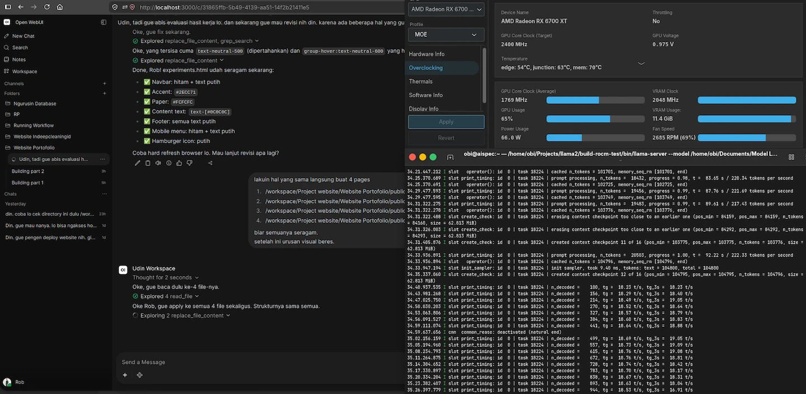

Experiment 001
StableThe 35B MoE model runs on an older architecture with 12GB of VRAM.
Testing whether 12GB of VRAM and an older GPU architecture can run open-source LLMs optimally without putting undue strain on the GPU.
System Requirements
CPU
Intel Core i5-11400F
RAM
16GB DDR4 3200 MT/s
GPU
Radeon RX 6700 XT
Backend
ROCm Native
OS
Ubuntu 26.04 LTS
Inference Engine
llama.cpp (upstream)
Frontend UI
Open WebUI v0.11.0
Model
Ornith-1.0-35B-A3B-IQ4_NL-GGUF
Context
128K
Status
Stable
Screenshot

Visualization
Decode Speed With --n-cpu-moe Value Configuration
Measured tokens/second across different --n-cpu-moe flags.
Prompt Processing Speed With Total Tokens Processing
Measured tokens/second at different total token counts.
Total Processing Tokens: 27K
For those unable to interpret the data from a technical standpoint, here is the conclusion: here is the conclusion
This experiment demonstrated that a 35-billion-parameter AI model can be run practically on a consumer GPU with only 12GB of VRAM.
It wasn't achieved by adding more hardware. It was achieved by understanding the system, identifying its bottlenecks, and carefully balancing what the CPU, GPU, memory, and inference engine were each responsible for.
The important finding isn't that a 35B model can run on a 12GB GPU. It's that hardware limitations can sometimes be worked around through better system understanding and optimization.
The result was a stable configuration that could run the model continuously without running out of memory, while still delivering practical inference performance.
The takeaway: when resources are limited, the answer isn't always to buy more resources. Sometimes, the better answer is to understand what you already have and make it work harder.
Experiment Details
Can 35B MoE model run practically on 12GB VRAM GPU? The goal is to find the optimal configuration that allows for stable performance without exceeding hardware limitations.
MoE architecture may provide better usability than dense models because active parameters are smaller, even if total model size is large.
Testing the model layer placement configuration using the expert splitting method on the CPU.
Several configurations hit memory limits, bandwidth bottlenecks, or unstable thermal behavior.
The backend adjustment (ROCm) for AMD must be native. Otherwise, prefill speeds are unacceptable. This involves optimizing KV cache management and adjusting the scheduler. But need GPU optimization too for better performance.
Decode
up to 28 tok/s
Context
128K
Prefill
up to 581 tok/s
Memory Pressure
Manageable
Out of Memory
Never
User Experience
Lossless
GPU Junction Temperature
Max 85°C
GPU Edge Temperature
Max 60°C
GPU VRAM Temperature
Max 70°C
Stability
Stable
The model achieved stable performance with acceptable latency, proving that constrained hardware can handle large MoE models with proper optimization.
MoE models can be viable on constrained hardware when quantization and memory management are properly tuned. The key is finding the right balance between model size, quantization level, and context length.
This approach can inform deployment decisions on constrained environments, showing that large models don't always require expensive hardware if properly optimized.
Configuration Template
~/Path build llama.cpp
MODEL="path model" (model 35B A3B) \ --host 0.0.0.0 \ --port 8080 \ --n-gpu-layers 99 \ --threads 4 \ --threads-batch 4 \ --n-cpu-moe 26 \ --moe-cache auto \ --ctx-size 131072 \ --batch-size 1024 \ --ubatch-size 512 \ --keep 8000 \ --cache-type-k f16 \ --cache-type-v f16 \ --swa-checkpoints 16 \ --checkpoint-min-step 2048 \ --embd-normalize 0 \ --no-kv-unified \ --kv-offload \ --jinja \ --flash-attn on \ --parallel 1 \ --cache-ram 8192 \ --cache-idle-slots \ --temp 0.6 \ --top-k 0 \ --top-p 0.95 \ --min-p 0 \ --repeat-penalty 1 \ --repeat-last-n 0 \ --alias coding \ --log-verbosity 4
Do not copy this configuration blindly; it must be adjusted to suit the specific characteristics of your model and hardware. This configuration serves only as a reference, as my choices were based on specific reasons that I will explain below.
-
1.
I chose
--n-gpu-layers 99as a baseline to offload the entire model to the GPU. -
2.
I chose
--threads 4because testing showed this to be my "sweet spot." This setting configures CPU threads to assist with token generation; the optimal value cannot simply be guessed but must be determined through testing based on your CPU's thread count. I happen to use an i5-11400F (6 cores, 12 threads), and 4 threads worked best for me. -
3.
I chose
--threads-batch 4because my tests showed that higher values increased prefill latency. This happens because too many CPU threads get involved in the prefill process—a task that should ideally rely more on the GPU to maintain reasonable speeds. However, using fewer threads isn't always faster either; bottlenecks can occur because parts of the model's "expert layers" are offloaded to the CPU. Also, monitor the GPU junction temperature: if prefill feels fast but the junction temperature is high, increase this value. -
4.
I chose
--n-cpu-moe 26to offload 26 experts to the CPU for optimal performance on my hardware. This value isn't universal; it varies depending on the specific model and its quantization. -
5.
Regarding
batchandubatch: these values shouldn't be chosen arbitrarily, as they affect compatibility with kernels and the inference engine. Higher numbers don't necessarily yield faster results; in fact, they often lead to anomalies—such as unreasonable GPU junction temperatures or even slower prefill speeds. -
6.
I selected
f16for KV cache compression to maintain memory consistency for the model. Of course, this reduces the number of model layers that can fit into the GPU, but I chosef16because, personally, I find a model losing its context far worse than slow inference speeds. -
7.
I chose
--no-kv-unifiedand--parallel 1because the model is used only by me in a single inference session. If multiple users were accessing the same model running on your PC, you would need to enable--kv-unifiedand increase the--parallelvalue. -
8.
The remaining configurations I haven't covered are standard settings that you can find in any other post.
FAQ
Frequently Asked Questions
Can a 35B MoE model really run on 12GB VRAM? ▼
Yes — with the right quantization (IQ4_NL), native ROCm backend, and careful layer placement using --n-cpu-moe 26, it runs stable at up to 28 tok/s decode and 581 tok/s prefill without ever hitting out-of-memory.
What was the biggest bottleneck you found? ▼
Not VRAM size but KV-cache and thread scheduling. Using --threads 4 and --no-kv-unified for single-user kept junction thermal at max 85°C and made 128K context stable.
Should I copy your llama.cpp config directly? ▼
No. The config is a reference tuned for i5-11400F + RX 6700 XT. You must re-test --n-cpu-moe, --threads, and batch sizes on your own hardware.